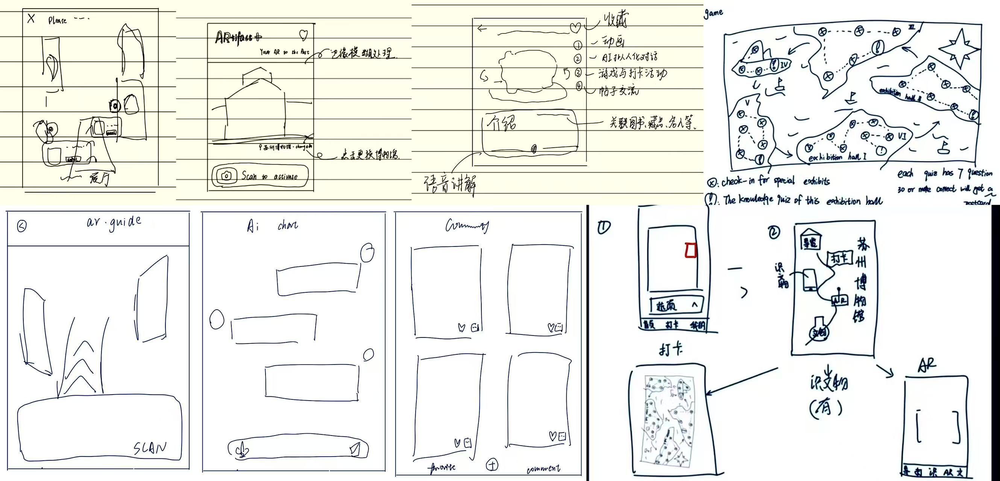
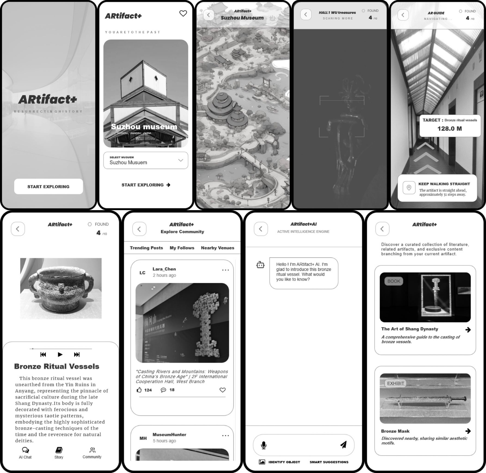
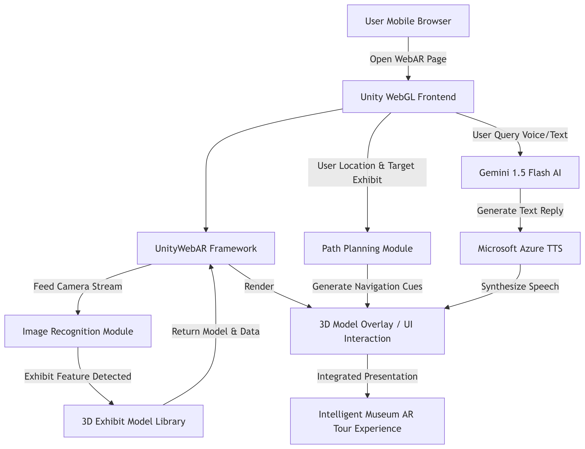

| Name | Student ID | Introduction |
|---|---|---|
| Shiqi.Gao | 2364044 | It is hoped that more people will be able to learn about our country's history, culture and objects through the Fun Museum. |
| Jielin.Wang | 2364423 | A third-year XJTLU student passionate about museums and digital technology, focusing on revitalizing cultural relics with interactive design. |
| Yi.Li | 2361372 | Digital media major and museum enthusiast, aiming to enhance young people’s willingness to visit museums through innovative interaction. |
| Kai.Xu | 2361744 | Digital media technology student with solid programming skills and strong interest in XR and interactive development. |
| Research Topic | Key Strengths | Main Limitations |
|---|---|---|
| Generative AI & Digital Museum Experience | Optimize interactive participation, realize personalized cultural interpretation, and enrich narrative forms | Unstable content accuracy, risk of cultural misunderstanding, and weak on-site experience |
| AI Interactive Museum Exhibition | Improve visitor engagement and information receiving efficiency, enhance entertainment perception | Highly dependent on design quality, lack of scalable lightweight solutions |
| AR Gamification in Science Museums | Strengthen emotional interaction and knowledge popularization through virtual companions and game mechanisms | Small experimental scale, easy to cause experience overload and ignore cultural content |
| AR Technology for Historical Museums | Build cross-temporal cultural connection and improve overall visitor satisfaction | Strong scenario restriction, high technical threshold, poor lightweight promotion |
| Existing Product | Advantages | Limitations |
|---|---|---|
| Digital Palace Museum | Authoritative content, complete 3D exhibition resources | Large installation package, insufficient lightweight interaction |
| Cloud Dunhuang | Elegant visual style, lightweight web browsing | Lack of real-scene AR recognition and on-site guidance |
| Traditional Museum Guide App | Stable audio commentary and basic navigation | Single interaction, no gamification or social attributes |


